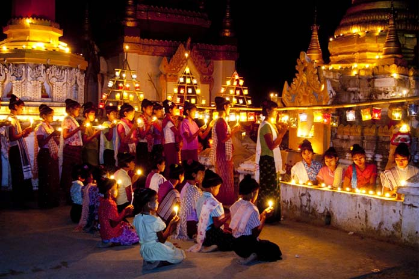
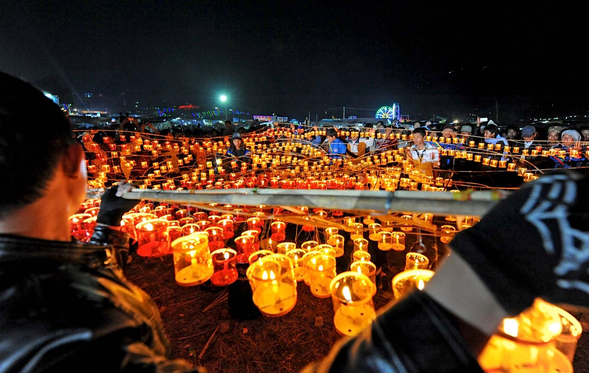
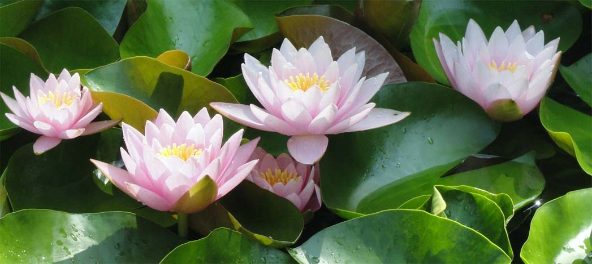

Thitintyut(Thadingyut) : October
Written by Khin Myo Chit and Junior Win ( Flowers & Festivals )
7.Thitintyut(Thadingyut)
The five lotuses are fragrant.
bright light burn.
At the top of the golden Palace Mountain
Myinmou lights blaze.
Season of lights.
Heads lower
three times in reverence.
Festival of lights
Thadingyut, the seventh month of the Myanmar calendar, marks the end of lent.Monsoon is on the way out and the skies are clearing.Sunny days are here to stay.
The austerity, so briety and restraint of the lenten season together with the damp murky gloom of the monsoon-all these have given way to fun and festivities.With the ban on weddings lifted, there is the scent of engenis leaves and lilies in the air. The soft breeze whispers the music of flutes and harps.
The three day lights festival, namely the day before the full moon, the full moon day and the day after, will be those of music, dances and fun.Illumination are there to celebrate the anniversary of the Buddha's return from the celestial abode where he had spent the lent teaching the gods above His Law.
Amoung the gods was the one who was the mother of the Buddha, reborn there.It was on the full moon day of Thadingyut month that the Buddha desended to the abode of humans.He and his disciples were attended by a heavenly host of celestials who created a pathway of stars. Humans on earth illuminated the homes and streets to welcome the Buddha and His disciples.
Although the anniversary is on the full moon day the Myanmar way of celebrating such an event is to have a festival on the eve, to welcome the day and the actual day and then the day after to give a grandsend-off.So, the three festival days instead of one The more the merrir.
Streets, houses and public buildings are illuminated and festooned with coloured electric bulbs.One feature of the festival in small towns and village is see-mee lighting; small earthen bowls are filled with sessamum oil and a piece of cotton is soaked in each bowl and lighted.
These lighted oil bowls are placed in the terraces of pagodas.The lights last longer than candles and the little tongues of flame quivering in the breeze lend an uncanny beauty to the scene steeped in silvery moonlight.Such lights are sometimes seen on the pagodas in Yangon city.
The sence of the Buddha's desent from the celestial regions is often recreated in the streets or pagoda precincts, all done up on paper mache and poster paintings and of course, lights. The festival is often called the Tawadaintha feast: Thwadaintha, being the name of the celestial abode where the Buddha spent the lenten season.
Thadingyut is not only a season of festivals and rejoicings, but also a time for remembering those to whom we owe respect and gratitude.The Buddha's visit to the celestial regions was to teach the great Truth he had found through rigorous striving for many many lives, to his own mother. It was a gesture of gratitude, an example for all to follow. The Buddha made the greatest gift of all, namely the gift of Dhamma(the Law) that would deliver her from Suffering once and for all.
According to the Buddhist teaching, there are Five Revered Ones, namely the Buddha, His Law, His Order of Monks, Parents and Teachers. During the Thadingyut season Myanmar Buddhists fo round paying respects to parents, teachers, edlerly relatives and friends.
It is Quite usual for the senior citizens in the street or residential quarter to receive gifts and respects from the younger people of the community. Sometimes it is an organized affair, but this does not prevent them from going to older people individually to pay respects. This way, it is more intimate and pleasant.
On the third day of the festival, people go round paying calls. It is "open house" for many homes.Older people have light refershments ready for the young visitor. They give away sweets and small change to children.Young people bring small gifts like candles, fruits and cakes, but it is not compulsory.Paying respects is accomplished by the act of kadaw, genuflection.
The word kadaw is an everyday expression in Myanmar life.When you have to say something indelicate or impolite, you say it with the word kadaw : the same word is used as an apology for any transgression like, bumping into someone or stepping on another's feet. On such occasions the word is synonymous with " sorry", but with a deeper feeling.
When you have the necessity to touch someone's hair, like brushing away a wisp of dust, you do not do so without first saying kadaw, even though the person concerned may not be an older person.
The custom of doing the act kadaw is rooted in the Buddhist acceptance of the samsara, the round of rebirths, being born and reborn ; all beings , humans and others go round the cycle, meeting one another in amicable or hostile relationships. Consequently, among people meeting one another in this present existence there would be love and kindness as there would be hate and enmity as well. There might bewrongful actions commited consciously or unwrittingly to one another throughtout the unending journey of samsara.
When Buddhists do the act of kadaw to anyone , their parents, teachers or elders, they not only pay respects as a gesture of gratitude, but they also ask forgiveness for any wrongful action they might have done in this life and many many lives before.
The elders, even as they accept the kadaw from young people, ask forgiveness in their turn for any wrongful action or hurt they themselves might have been guilty of. This reciporcal action is called the " erasing of the slate" , which is the sane as "burying the hatchet".After this actof "erasing the slate", friends and kinsmen can start with a "clean slate" with nothing but love and kindness.
Paying respects or kadaw ceremonies are organized and held in schools.Paying respects to teachers,one of the Five Revered Ones,is still practised.Buddhist parables illustrate the good influence of teachers on their students, even though the latter might have become ruling kings.
Once,a short time after the demise of the Buddha,the kings of India assembled to claim their share of the Buddha's relics.It was a good company of crowned heads,each attended by the Four Elements of War,namely,infantry, cavaily,chariots and war elephants.Swords and spears and shields burned in the sunlight as the caparisoned steeds and elephants dug their heels impatiently,as they waited for action.
Then came the dispute over who should get how much of the relics.Tempers rose and angry voices rang through the air and the steel changed as the warrios made ready their wespons.Hores neighed and reared,elephants let forth afearful trumpeting.A havoc of blood and destruction was imminent.
At thatcrucial moment,an authoritative voice rang out above the din:"Silence,all of you!"The kings turned their heads towards the voice they knew so well,the voice they knew so well,the voice that had dared to command them. There stood Dona the brahman,who was their teacher,who had taught them the princely arts,in their student days.
There was silence,as the kings bowed to the one who had been their teacher.Without so much as aword of dissent, the kings accepted their share of the relics handed out of by Dona the brahman, and went away in peace. Sthis is the spirit of Thadingyut season.....paving respects to these to whom respect is due and remembering those to whom we owe gratigude.